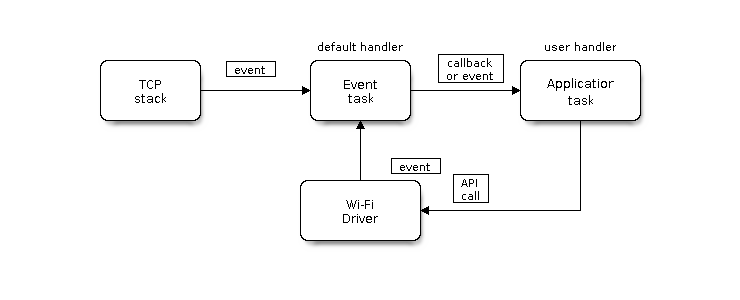
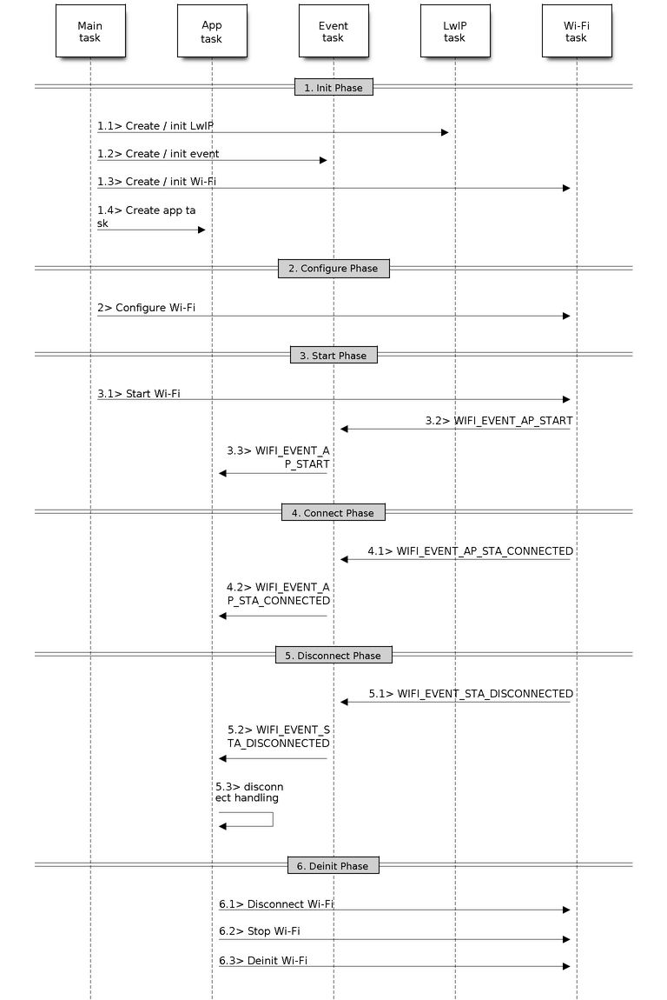

Lab 2. WiFi in ESP32
Goals
- Familiarize yourself with the workflow of the WiFi driver in ESP-IDF.
- Understand the difference between station and AP modes.
- Develop firmware that can work as AP for others and as station to connect to another AP.
- Understand the network scanning mechanisms in ESP-IDF.
Introduction
The ESP-IDF WiFi libraries and components provide support to configure and monitor 802.11 connections on ESP32 boards. This includes settings for:
-
Stationmode (WiFi client mode, or STA). In this case, the ESP32 connects to a preconfigured access point. -
APmode (also called softAP or Access Point mode). In this case, other stations can connect to the ESP32. -
AP-STA combined mode, where ESP32 is concurrently acting as an access point and a station connected to another access point.
-
Various security modes in both client mode and AP mode (WPA, WPA2, WEP, etc.)
-
Access point scanning (active and passive).
-
Key provisioning and WPS mode.
-
Promiscuous mode for IEEE 802.11 packet monitoring.
In the present lab we will study through basic examples the main features supported by the WiFi driver. All these characteristics can be used later for the development of codes and more complex projects with minimal modifications.
ESP32 Wi-Fi Programming Model
The ESP32 Wi-Fi programming model can be described with the following figure:

The Wi-Fi driver can be considered a black box that knows nothing about high-layer code, such as the TCP/IP stack, application task, event task, etc. The application task (code) generally calls Wi-Fi driver APIs to initialize Wi-Fi and handles Wi-Fi events when necessary. Wi-Fi driver receives API calls, handles them, and post events to the application.
Wi-Fi event handling is based on the esp_event
library.
Events are sent by the Wi-Fi driver to the default event
loop.
Application may handle these events in callbacks registered using
esp_event_handler_register(). Wi-Fi events are also handled by esp_netif
component to provide a set of default behaviors. For example, when Wi-Fi station
connects to an AP, esp_netif will automatically start the DHCP client by default
(even though this Default behavior can be customized to, for example, assign an
IP address statically).
Note
All the API mentioned below is described in depth in this link. It is advisable to have this information during the process as well as in this lab document.
WiFi events
The following list shows the description of the wifi events that are handled in the example codes we work through in this lab assignment.
-
WIFI_EVENT_SCAN_DONEThe scan-done event is triggered by
esp_wifi_scan_start()and will arise in the following scenarios: - The scan is completed, e.g., the target AP is found successfully, or all channels have been scanned. - The scan is stopped byesp_wifi_scan_stop(). - Theesp_wifi_scan_start()is called before the scan is completed. A new scan will override the current scan and a scan-done event will be generated.The scan-done event will not arise in the following scenarios: - It is a blocked scan. - The scan is caused by
esp_wifi_connect().Upon receiving this event, the event task does nothing. The application event callback needs to call
esp_wifi_scan_get_ap_num()andesp_wifi_scan_get_ap_records()to fetch the scanned AP list and trigger the Wi-Fi driver to free the internal memory which is allocated during the scan (do not forget to do this!). Refer to ESP32 Wi-Fi Scan for a more detailed description. -
WIFI_EVENT_STA_STARTIf
esp_wifi_start()returns ESP_OK and the current Wi-Fi mode is station or station/AP, then this event will arise. Upon receiving this event, the event task will initialize the LwIP network interface (netif). Generally, the application event callback needs to callesp_wifi_connect()to connect to the configured AP. -
WIFI_EVENT_STA_STOPIf
esp_wifi_stop()returns ESP_OK and the current Wi-Fi mode is station or station/AP, then this event will arise. Upon receiving this event, the event task will release the station’s IP address, stop the DHCP client, remove TCP/UDP-related connections and clear the LwIP station netif, etc. The application event callback generally does not need to do anything. -
WIFI_EVENT_STA_CONNECTEDIf
esp_wifi_connect()returns ESP_OK and the station successfully connects to the target AP, the connection event will arise. Upon receiving this event, the event task starts the DHCP client and begins the DHCP process of getting the IP address. Then, the Wi-Fi driver is ready for sending and receiving data.This moment is good for beginning the application work, provided that the application does not depend on LwIP, namely the IP address. However, if the application is LwIP-based, then you need to wait until the got ip event
WIFI_EVENT_STA_GOT_IPcomes in. -
WIFI_EVENT_STA_DISCONNECTEDThis event can be generated in the following scenarios:
-
When
esp_wifi_disconnect(), oresp_wifi_stop()is called and the station is already connected to the AP. -
When
esp_wifi_connect()is called, but the Wi-Fi driver fails to set up a connection with the AP due to certain reasons, e.g. the scan fails to find the target AP, authentication times out, etc. If there are more than one AP with the same SSID, the disconnected event is raised after the station fails to connect all of the found APs. -
When the Wi-Fi connection is disrupted because of specific reasons, e.g., the station continuously loses N beacons, the AP kicks off the station, the AP’s authentication mode is changed, etc.
Upon receiving this event, the default behavior of the event task is to: - Shut down the station’s LwIP netif.
- Notify the LwIP task to clear the UDP/TCP connections which cause the wrong status to all sockets. For socket-based applications, the application callback can choose to close all sockets and re-create them, if necessary, upon receiving this event.
The most common event handle code for this event in application is to call
esp_wifi_connect()to reconnect the Wi-Fi. However, if the event is raised becauseesp_wifi_disconnect()is called, the application should not call esp_wifi_connect() to reconnect. It’s application’s responsibility to distinguish whether the event is caused byesp_wifi_disconnect()or other reasons. -
-
IP_EVENT_STA_GOT_IP(wasWIFI_EVENT_STA_GOT_IP)This event arises when the DHCP client successfully gets the IPV4 address from the DHCP server, or when the IPV4 address is changed. The event means that everything is ready and the application can begin its tasks (e.g., creating sockets).
The IPV4 may be changed because of the following reasons: - The DHCP client fails to renew/rebind the IPV4 address, and the station’s IPV4 is reset to 0. - The DHCP client rebinds to a different address. - The static-configured IPV4 address is changed.
Whether the IPV4 address is changed or NOT is indicated by field ip_change of ip_event_got_ip_t.
The socket is based on the IPV4 address, which means that, if the IPV4 changes, all sockets relating to this IPV4 will become abnormal. Upon receiving this event, the application needs to close all sockets and recreate the application when the IPV4 changes to a valid one.
-
IP_STA_LOST_IP(wasWIFI_EVENT_STA_LOST_IP)This event arises when the IPV4 address become invalid.
IP_STA_LOST_IP doesn’t arise immediately after the Wi-Fi disconnects, instead it starts an IPV4 address lost timer, if the IPV4 address is got before ip lost timer expires, IP_EVENT_STA_LOST_IP doesn’t happen. Otherwise, the event arises when IPV4 address lost timer expires.
Generally the application don’t need to care about this event, it is just a debug event to let the application know that the IPV4 address is lost.
-
WIFI_EVENT_STA_STARTIf
esp_wifi_start()returns ESP_OK and the current Wi-Fi mode is station or station/AP, then this event will arise. Upon receiving this event, the event task will initialize the LwIP network interface (netif). Generally, the application event callback needs to call esp_wifi_connect() to connect to the configured AP. -
WIFI_EVENT_AP_STARTSimilar to
WIFI_EVENT_STA_START -
WIFI_EVENT_AP_STACONNECTEDEvery time a station is connected to ESP32 AP, the
WIFI_EVENT_AP_STACONNECTEDwill arise. Upon receiving this event, the event task will do nothing, and the application callback can also ignore it. However, you may want to do something, for example, to get the info of the connected STA, etc. -
WIFI_EVENT_AP_STADISCONNECTEDThis event can happen in the following scenarios: - The application calls
esp_wifi_disconnect(), oresp_wifi_deauth_sta(), to manually disconnect the station. - The Wi-Fi driver kicks off the station, e.g. because the AP has not received any packets in the past five minutes, etc. The time can be modified byesp_wifi_set_inactive_time(). - The station kicks off the AP.When this event happens, the event task will do nothing, but the application event callback needs to do something, e.g., close the socket which is related to this station, etc.
Station Mode
The figure describes some usual scenarios in station mode:

The main phases in this mode are analyzed below (not all of them have to be present necessarily in all settings).
1. WiFi/LwIP Init Phase
The following 1-5 steps are the recommended sequence to initialize a Wi-Fi-/LwIP-based application:
- The main task calls
esp_netif_init()to create an LwIP core task and initialize LwIP-related work. - The main task calls
esp_event_loop_create()to create a system Event task and initialize an application event’s callback function. In the scenario above, the application event’s callback function does nothing but relaying the event to the application task. - The main task calls
esp_netif_create_default_wifi_ap()oresp_netif_create_default_wifi_sta()to create default network interface instance binding station or AP with TCP/IP stack. - The main task calls
esp_wifi_init()to create the Wi-Fi driver task and initialize the Wi-Fi driver. - The main task calls OS API to create the application task.
However, it is NOT a must-follow sequence, which means that you can create the application task in step 1 and put all other initializations in the application task. Moreover, you may not want to create the application task in the initialization phase if the application task depends on the sockets. Rather, you can defer the task creation until the IP is obtained.
2. WiFi Configuración Phase
Once the Wi-Fi driver is initialized, you can start configuring the Wi-Fi
driver. In this scenario, the mode is station, so you may need to call
esp_wifi_set_mode() (WIFI_MODE_STA) to configure the Wi-Fi mode as station.
You can call other esp_wifi_set_xxx APIs to configure more settings, such as
the protocol mode, country code, bandwidth, etc. Refer to ESP32 Wi-Fi
Configuration
for more information on the operation modes.
Generally, we configure the Wi-Fi driver before setting up the Wi-Fi connection,
but this is NOT mandatory, which means that you can configure the Wi-Fi
connection anytime, provided that the Wi-Fi driver is initialized successfully.
However, if the configuration does not need to change after the Wi-Fi connection
is set up, you should configure the Wi-Fi driver at this stage, because the
configuration APIs (such as esp_wifi_set_protocol()) will cause the Wi-Fi to
reconnect, which may not be desirable.
The routine esp_wifi_set_config () allows you to configure the basic aspects
of the WiFi connection. For example, the following code performs a basic WiFi
setup by providing SSID, password, and authentication mode before configuring
the connection:
wifi_config_t wifi_config = {
.sta = {
.ssid = EXAMPLE_ESP_WIFI_SSID,
.password = EXAMPLE_ESP_WIFI_PASS,
.threshold.authmode = WIFI_AUTH_WPA2_PSK,
.pmf_cfg = {
.capable = true,
.required = false
},
},
};
ESP_ERROR_CHECK(esp_wifi_set_mode(WIFI_MODE_STA) );
ESP_ERROR_CHECK(esp_wifi_set_config(ESP_IF_WIFI_STA, &wifi_config) );
3. WiFi Start Phase
- Call
esp_wifi_start()to start the Wi-Fi driver. - The Wi-Fi driver posts
WIFI_EVENT_STA_STARTto the event task; then, the event task will do some common things and will call the application event callback function. - The application event callback function relays the
WIFI_EVENT_STA_STARTto the application task. We recommend that you callesp_wifi_connect(). However, you can also callesp_wifi_connect()in other phrases after theWIFI_EVENT_STA_STARTarises.
4. WiFi Connect Phase
- Once
esp_wifi_connect()is called, the Wi-Fi driver will start the internal scan/connection process. - If the internal scan/connection process is successful, the
WIFI_EVENT_STA_CONNECTEDwill be generated. In the event task, it starts the DHCP client, which will finally trigger the DHCP process. - In the above-mentioned scenario, the application event callback will relay the event to the application task. Generally, the application needs to do nothing, and you can do whatever you want, e.g., print a log, etc.
In step 2, the Wi-Fi connection may fail because, for example, the password is
wrong, the AP is not found, etc. In a case like this,
WIFI_EVENT_STA_DISCONNECTED will arise and the reason for such a failure will
be provided. For handling events that disrupt Wi-Fi connection, please refer to
phase 6.
5. Wi-Fi Got IP Phase
- Once the DHCP client is initialized in step 4.2, the got IP phase will begin.
- If the IP address is successfully received from the DHCP server, then
IP_EVENT_STA_GOT_IPwill arise and the event task will perform common handling. - In the application event callback,
IP_EVENT_STA_GOT_IPis relayed to the application task. For LwIP-based applications, this event is very special and means that everything is ready for the application to begin its tasks, e.g. creating the TCP/UDP socket, etc. A very common mistake is to initialize the socket beforeIP_EVENT_STA_GOT_IPis received. DO NOT start the socket-related work before the IP is received.
6. WiFi Disconnect Phase
- When the Wi-Fi connection is disrupted, e.g. because the AP is powered
off, the RSSI is poor, etc.,
WIFI_EVENT_STA_DISCONNECTEDwill arise. - In the scenario described above, the application event callback function
relays
WIFI_EVENT_STA_DISCONNECTEDto the application task. We recommend thatesp_wifi_connect()be called to reconnect the Wi-Fi, close all sockets and re-create them if necessary.
7. WiFi IP Change Phase
-
If the IP address is changed, the
IP_EVENT_STA_GOT_IPwill arise withip_changefield set to true in theip_event_got_ip_tstructure passed to the event handler. -
This event is important to the application. When it occurs, the timing is good for closing all created sockets and recreating them.
8. WiFi Deinit Phase
- Call
esp_wifi_disconnect()to disconnect the Wi-Fi connectivity. - Call
esp_wifi_stop()to stop the Wi-Fi driver. - Call
esp_wifi_deinit()to unload the Wi-Fi driver.
Analysis of an example (wifi/getting_started/station)
Task 2.1
Analyze the station example, compile it and flash it. Study the treatment
of events that it carries out, and how these are emitted for real cases. To
do this, try the following things:
- connect your ESP32 with an existing access point
- connect your ESP32 with a non-existent access point
- turn off the access point while the IP is granted
Do it while you monitor the ESP32 to see the screen messages of the events
handlers. If there is no message for one of them modify the code to handle
it. Deliver the code and a brief report commenting your observations (pdf
format).
Access Point Mode
The following figure roughly describes some of the main scenarios that can occur in AP (access point) mode:

The workflow is very similar to that of station mode, with the difference
basic type of WiFi configuration to perform (WIFI_MODE_AP) and obviously
configuration parameters. Take a look at the following configuration example:
wifi_config_t wifi_config = {
.ap = {
.ssid = EXAMPLE_ESP_WIFI_SSID,
.ssid_len = strlen(EXAMPLE_ESP_WIFI_SSID),
.channel = EXAMPLE_ESP_WIFI_CHANNEL,
.password = EXAMPLE_ESP_WIFI_PASS,
.max_connection = EXAMPLE_MAX_STA_CONN,
.authmode = WIFI_AUTH_WPA_WPA2_PSK
},
};
if (strlen(EXAMPLE_ESP_WIFI_PASS) == 0) {
wifi_config.ap.authmode = WIFI_AUTH_OPEN;
}
ESP_ERROR_CHECK(esp_wifi_set_mode(WIFI_MODE_AP));
ESP_ERROR_CHECK(esp_wifi_set_config(ESP_IF_WIFI_AP, &wifi_config));
For more information on the configuration parameters of an Access Point, check AP Basic Configuration.
Analysis of an example (wifi/getting_started/softAP)
Task 2.2
Analyze the softAP example, compile it and flash it. Study the treatment
of events that it carries out, and how these are emitted for real cases. To
do it, connect different clients (stations), either ESP32 or any another
device, and analyze the generated events and their response. If there is no
message printed for any of them, add the corresponding handling code.
Deliver the code and a small report documenting your observations (pdf
format).
Combined STA and AP Mode
ESP-IDF supports a mixed mode of connection, in which the ESP32 is both
an access point (AP) and a station (station). This mode is configured
using the ESP_MODE_APSTA parameter in the invocation of the routine
esp_wifi_set_mode().
Obviously, the code will require two independent wifi_config_t structures, one
with the data associated with the point access (field .ap) mode and another
with the fields associated with the station mode (.sta field). In addition,
it will be necessary to invoke the configuration routine (esp_wifi_set_config)
with each of these structures. And finally, you also need to invoke the
initialization of netif both in station mode
(esp_netif_create_default_wifi_sta()) an in AP mode
(esp_netif_create_default_wifi_ap()).
Exercise: develop a station/AP mixed node
Task 2.3
Modify the station example so that the ESP32 behaves at the same time
as a station and as an access point. Add the necessary configuration options
to be able to set all the parameters via menuconfig. Check that the ESP32
actually connects to the point access and that at the same time it is
possible to connect another device to it as a station (for example, your
mobile phone). Deliver the developed code.
Scanning WiFi networks
WiFi Scanning Modes
The WiFi network scanning mode (i.e. invoking the routine
esp_wifi_scan_start()) is only supported currently in station or
station/AP modes. The different types of network scanning modes are:
| Mode | Description |
|---|---|
| Active Scan | Scan by sending a probe request. The default scan is an active scan. |
| Passive Scan | No probe request is sent out. Just switch to the specific channel and wait for a beacon. Application can enable it via the scan_type field of wifi_scan_config_t. |
| Foreground Scan | This scan is applicable when there is no Wi-Fi connection in station mode. Foreground or background scanning is controlled by the Wi-Fi driver and cannot be configured by the application. |
| Background Scan | This scan is applicable when there is a Wi-Fi connection in station mode or in station/AP mode. Whether it is a foreground scan or background scan depends on the Wi-Fi driver and cannot be configured by the application. |
| All-Channel Scan | It scans all of the channels. If the channel field of wifi_scan_config_t is set to 0, it is an all-channel scan. |
| Specific Channel Scan | It scans specific channels only. If the channel field of wifi_scan_config_t set to 1-14, it is a specific-channel scan. |
The scan modes in above table can be combined arbitrarily, so we totally have 8 different scans:
- All-Channel Background Active Scan
- All-Channel Background Passive Scan
- All-Channel Foreground Active Scan
- All-Channel Foreground Passive Scan
- Specific-Channel Background Active Scan
- Specific-Channel Background Passive Scan
- Specific-Channel Foreground Active Scan
- Specific-Channel Foreground Passive Scan
Scan Configuration
The scan type and other per-scan attributes are configured by
esp_wifi_scan_start(). The table below provides a detailed description of
wifi_scan_config_t.
| Field | Description |
|---|---|
| ssid | If the SSID is not NULL it is only the AP with the same SSID that can be scanned. |
| bssid | If the BSSID is not NULL it is only the AP with the same BSSID that can be scanned. |
| channel | If channel is 0 there will be an all-channel scan; otherwise there will be a specific-channel scan. |
| show_hidden | If show_hidden is 0 the scan ignores the AP with a hidden SSID; otherwise the scan considers the hidden AP a normal one. |
| scan_type | If scan_type is WIFI_SCAN_TYPE_ACTIVE the scan is active; otherwise it is a passive one. |
| scan_time | This field is used to control how long the scan dwells on each channel. See Scan Configuration for more details |
Scan All APs on All Channels (Foreground)
The following figure describes a basic scan over all channels in foreground (remember that it can only occur in station mode when it is not yet connected to an AP).

1. Scan Configuration Phase
- Call esp_wifi_set_country() to set the country info if the default country info is not what you want, refer to Wi-Fi Country Code.
- Call esp_wifi_scan_start() to configure the scan. To do so, you can refer to Scan Configuration. Since this is an all-channel scan, just set the SSID/BSSID/channel to 0.
2. WiFi Driver's Internal Scan Phase
- The Wi-Fi driver switches to channel 1, in case the scan type is
WIFI_SCAN_TYPE_ACTIVE, and broadcasts a probe request. Otherwise, the Wi-Fi will wait for a beacon from the APs. The Wi-Fi driver will stay in channel 1 for some time. The dwell time is configured in min/max time, with default value being 120 ms. - The Wi-Fi driver switches to channel 2 and performs the same operation as in step 2.1.
- The Wi-Fi driver scans the last channel N, where N is determined by the country code which is configured in step 1.1.
3. Scan-Done Event Handling Phase
- When all channels are scanned, WIFI_EVENT_SCAN_DONE will arise.
- The application’s event callback function notifies the application task that
WIFI_EVENT_SCAN_DONEis received.esp_wifi_scan_get_ap_num()is called to get the number of APs that have been found in this scan. Then, it allocates enough entries and callsesp_wifi_scan_get_ap_records()to get the AP records. Please note that the AP records in the Wi-Fi driver will be freed, onceesp_wifi_scan_get_ap_records()is called. Do not callesp_wifi_scan_get_ap_records()twice for a single scan-done event. Ifesp_wifi_scan_get_ap_records()is not called when the scan-done event occurs, the AP records allocated by the Wi-Fi driver will not be freed. So, make sure you callesp_wifi_scan_get_ap_records(), yet only once.
Analysis of an example (wifi/scan)
Analyze the scan example, and try to observe the flow detailed above.
Task 2.4
Compile, flash and run the scan sample. See if the results are what you expected in your home environment. Study and modify the waiting times in the scan and see the effect on the scan time. Deliver a brief report with your observations (pdf format).